\Huge \textbf{Thème 1 : Internet}\normalsize
\huge \textbf{Chapitre 3 : Simulation d'un réseau à l'aide du logiciel Filius}\normalsize
Introduction⚓︎
Le but de ce TP est de construire un réseau virtuel afin de bien configurer l'ensemble des éléments de ce dernier et d'observer le déplacement des paquets d'un ordinateur à un autre lors d'une requête.
Pour cela, nous utiliserons le logiciel allemand gratuit Filius1.
Nous avancerons à petit pas en commençant par constituer un réseau simple de deux ordinateur, un réseau un peu plus évolué avec un switch, puis avec un routeur. Nous effectuerons une simulation de mise en réseau de plusieurs réseaux locaux via internet puis d'un réseau local en connections avec différents serveurs.
Lien direct⚓︎
Exercice 1⚓︎
- Créer un réseau simple avec deux Portables liés, servant de clients.
- Configurer les Portables avec les noms indiqués ci-dessous et les adresses IP
192.168.0.10et192.168.0.11 - L'utilisation du masque de sous-réseau
255.255.255.0garantit que les deux ordinateurs font partie du même réseau.

Remarque⚓︎
Pour ne pas nommer manuellement chaque Portable, utiliser l'option Utiliser l'adresse IP comme nom pour permettre à FILIUS de définir automatiquement le nom de l'ordinateur en tant qu'adresse IP.
Exercice 2⚓︎
- Sélectionner le Portable avec l'adresse IP se terminant par
0.10 - Installer dessus le logiciel Ligne de commande.
- Démarrer la ligne de commande et tester la connexion à l'ordinateur
0.11à l'aide de la commandeping 192.168.0.11
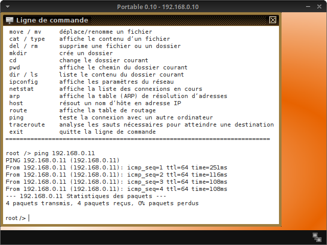
\newpage
- Inspecter l'activité du réseau en affichant les données échangées de l'ordinateur
0.10dans le modèle OSI (clic droit sur lePortable 0.10puis Afficher les échanges de données (192.168.0.10)).

- Nous pouvons observer que l'activité du réseau n'atteint que la couche Internet. Les couches plus élevées et plus complexes du modèle TCP/IP ne sont pas encore nécessaires. En sélectionnant l'une des lignes dans la fenêtre d'échange de données, il est possible d'afficher des informations sur les couches inférieures du modèle TCP/IP, ainsi que des informations plus détaillées sur les couches utilisées.
Exercice 3⚓︎
Essayer ensuite d'autres commandes en utilisant la ligne de commande, telles que ipconfig, host localhost ou ls.
L'utilisation de la commande host apparaîtra clairement ultérieurement, lors des exercices incluant un DNS Server.
Connexion d'ordinateurs à l'aide d'un Switch⚓︎
Exercice 4⚓︎
- Développer maintenant ce réseau en ajoutant un troisième ordinateur qui correspond à un serveur, avec l'adresse IP
192.168.0.12. - Puis connecter les trois ordinateurs à un Switch.

Exercice 5⚓︎
- Ouvrir le bureau du
serveur 0.12. - Installer et démarrer le logiciel Serveur générique sur le port prédéfini
55555. - Utiliser l'un des Portable pour installer le logiciel Client générique et le connecter au serveur.
- Essayer d'envoyer des messages texte du client au serveur et observer le résultat. Jeter également un coup d'oeil à l'activité du réseau dans la fenêtre d'échange de données du Portable.
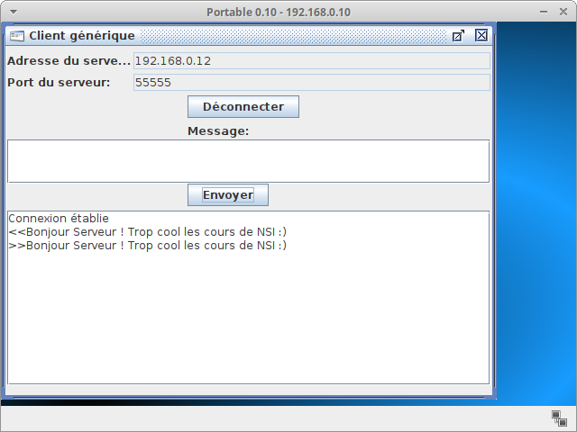

La fenêtre d'échange de données (voir image ci-dessous) montre, dans cet exemple, que la couche de transport est nécessaire pour la première fois. L'établissement de la connexion entre le client et le serveur utilise déjà trois couches dans le modèle TCP/IP. Les deux premières lignes sont à nouveau utilisées pour déterminer l'adresse MAC, appartenant à l'adresse IP du serveur. Dès que vous envoyez un message de client à serveur, la quatrième couche, appelée couche d'application, entre en jeu.
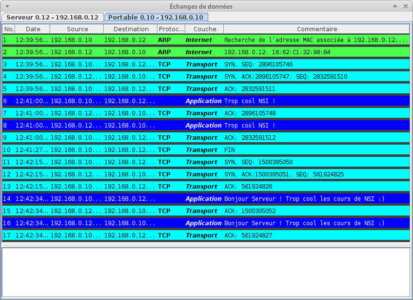
Le logiciel, qui est le Client générique, utilise tout d'abord la couche application, puis la couche transport, la couche internet et enfin la couche réseau. Toutes ces informations seront affichées en cliquant sur la première ligne bleu foncé dans le modèle d'échange de données, ce qui affichera l'image ci-dessous :

Remarque⚓︎
Dans les exercices suivants, ne pas oublier de regarder de temps en temps la fenêtre d'échange de données pour avoir une idée du type d'informations en cours de transmission au sein du réseau.
Connexion de deux réseaux à l'aide d'un Routeur⚓︎
Exercice 6⚓︎
- Créer un deuxième réseau avec trois nouveaux ordinateurs, comme indiqué ci-dessous :
Nous voulons que les trois nouveaux ordinateurs se trouvent sur un réseau logiquement différent, pour lequel nous utiliserons les adresses IP192.168.1.10à192.168.1.12
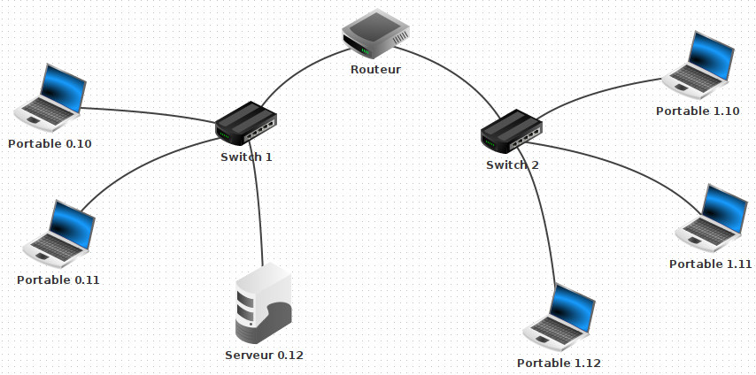
- Ensuite, connecter les deux réseaux à l'aide d'un Routeur et configurer les deux cartes d'interface réseau avec les adresses IP
192.168.0.1et192.168.1.1
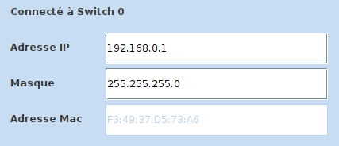
- Pour finir tester la connexion entre les ordinateurs
0.10et0.11à l'aide de la commandeping.
Tout doit fonctionner. Ensuite, tester la connexion entre les ordinateurs0.10et1.11à l'aide de nouveau de la commandeping.
FILIUS affiche alors le message suivant dans l'invite de commande :
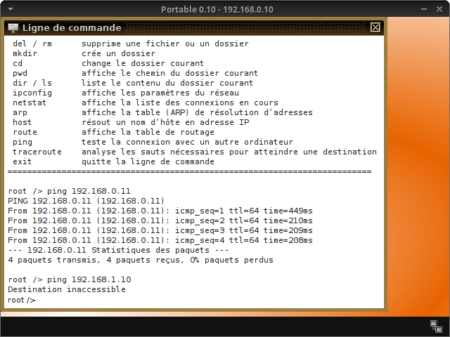
Ce message d'erreur s'affiche car la requête doit quitter le réseau local. La passerelle de chaque ordinateur n'est pas encore configurée. Or, cette configuration permet à la requête de quitter le réseau local.
Exercice 7⚓︎
- Le Routeur dispose d'une carte d'interface réseau avec l'adresse
192.168.0.1que vous configurerez en tant que passerelle pour les trois portables du côté gauche.

- Définir la passerelle pour les trois portables du côté droit sur
192.168.1.1en conséquence. - Essayer à nouveau la même connexion à l'aide de la commande
pingdepuis leportable 0.10vers leportable 1.11.
Cela devrait fonctionner correctement cette fois, comme sur la figure ci-dessous.
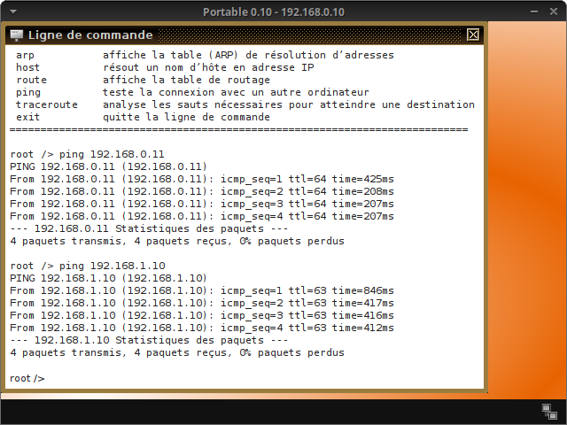
- Lorsque vous regardez la fenêtre d'échange de données, vous pouvez constater que la première demande prend beaucoup plus de temps que les trois suivantes. En effet, la table de routage des deux Switchs est vide au début et est ensuite créée après la première demande.
 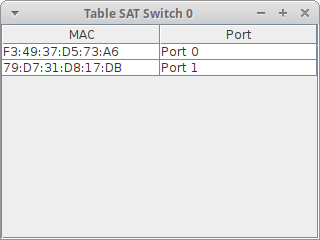
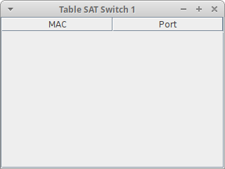
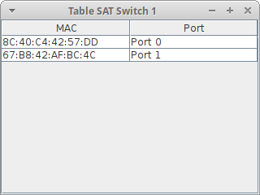
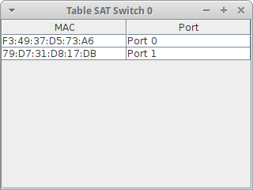
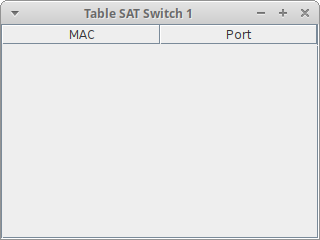
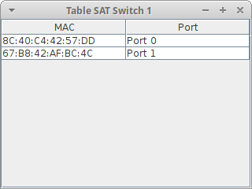
Exercice 8⚓︎
- Essayer de tester le réseau avec un client générique et un serveur générique.
- Utiliser le
portable 1.10pour installer le logiciel Client générique et le connecter auserveur 0.12.
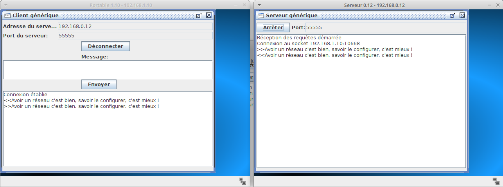
Simulation du World Wide Web⚓︎
Exercice 9⚓︎
Utiliser le serveur 0.12 pour installer les logiciels Serveur Web et Editeur de textes. Prendre l'éditeur de texte pour ouvrir le fichier index.html qui se trouve dans le répertoire virtuel ./webserver. Le fichier peut être maintenant modifié afin de représenter les informations souhaitées. Vous pouvez le modifier comme bon vous semble. Nous avons déjà vu en début d'année dans le thème 2 comment rédiger une jolie page web ...
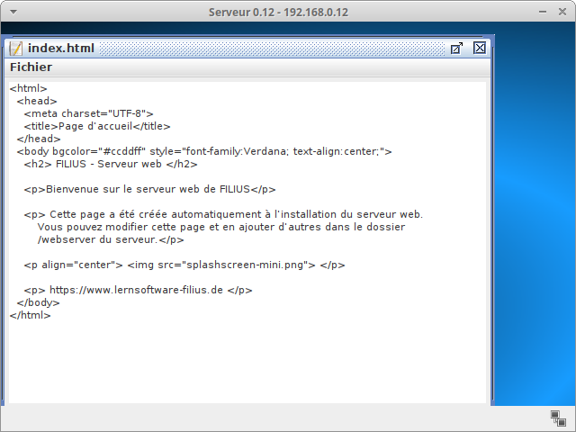
Exercice 10⚓︎
- Sur le bureau du
serveur Web 0.12, démarrer le logiciel Webserver d'un double clic. Puis démarrer le serveur Web virtuel en cliquant sur le bouton Démarrer :
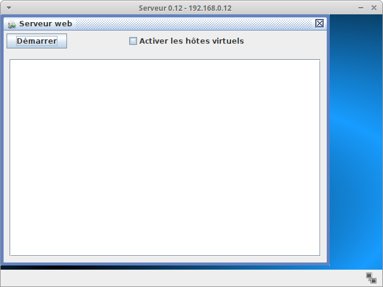
- Après cela, passer à l'
ordinateur 1.10pour installer le logiciel Navigateur Web. Démarrer le navigateur et essayer d'établir une connexion au serveur Web en tapant l'URLhttp ://192.168.0.12dans le champ d'adresse du navigateur Web :
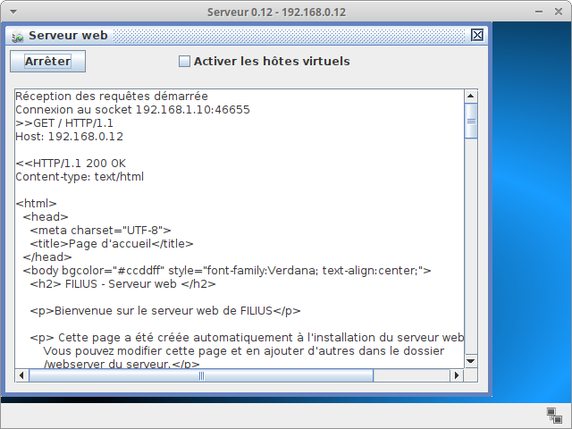

Exercice 11⚓︎
Nous avons établi une connexion, mais ce n'est pas comme cela que nous communiquons habituellement avec d'autres serveurs Web. Normalement, nous contactons un site Web en tapant son URL et non l'adresse IP du serveur Web. La résolution entre l'URL et l'adresse IP correspondante est effectuée par un serveur de noms de domaine, également appelé serveur DNS, que nous allons maintenant configurer.
- Créer un nouveau serveur avec l'adresse IP
192.168.2.10(masque255.255.255.0) et la passerelle définie sur192.168.2.1(ce sera l'IP de l'interface du routeur branchée sur le serveur). - Changer le nombre d'interfaces du Routeur (clic droit sur le routeur, paramètres, gérer les connexions puis ajouter une interface locale).
Définir l'adresse IP192.168.2.1de cette nouvelle interface et renseigner le masque à255.255.255.0
Enfin, connecter le nouveau serveur au Routeur avec un câble :
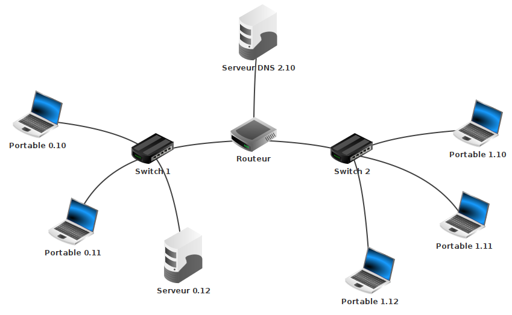
 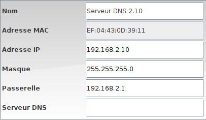
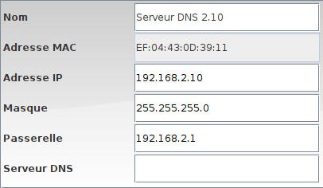
- Tester votre configuration à l'aide d'un ping 192.168.2.10 à partir d'un ordinateur quelconque du réseau pour vérifier que le
serveur DNSest accessible.
Exercice 12⚓︎
Pour permettre à tous les ordinateurs d'utiliser le service du serveur DNS, ajouter l'adresse IP du serveur DNS (192.168.2.10) à la configuration de chaque Portable.
Exercice 13⚓︎
Il ne nous reste plus qu'à attribuer au serveur Web une URL appropriée et l'ajouter à la table de référence du serveur DNS afin que nous puissions l'atteindre par son nom et pas uniquement via son adresse IP.
- Pour cela, sélectionner le
serveur 2.10. Installer et démarrer le logiciel Server DNS.
Saisirwww.snt4ever.frdans le champ Nom de domaine et192.168.0.12dans le champ Adresse IP. - Cliquer ensuite sur le bouton Ajouter pour ajouter l'entrée au tableau de référence du serveur DNS.
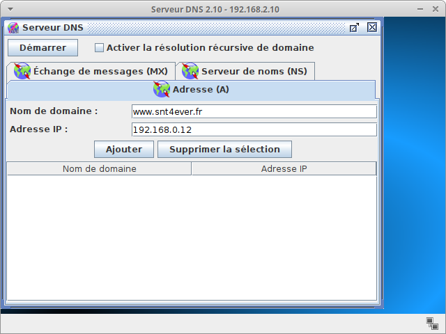

- Enfin, démarrer le serveur DNS en cliquant sur le bouton Démarrer et tester la connexion en utilisant le navigateur Web sur le
Portable 0.10et en recherchant l'URLhttp ://www.snt4ever.fr(et non l'adresse IP comme lors de la première fois).
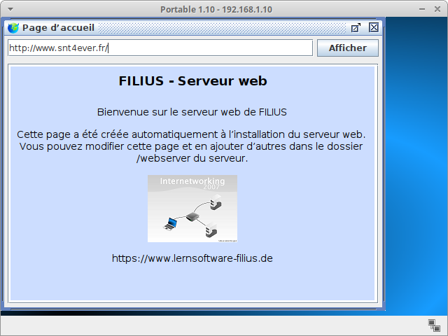
Exercice 14⚓︎
Au début de l'activité, nous avons appris la commande host dans le terminal. Essayer à nouveau d'utiliser la commande host avec l'URL www.snt4ever.fr. Constater que le Serveur DNS fait son travail et renvoie l'adresse IP du Webserver :
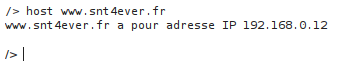
Echanges de fichiers via peer-to-peer⚓︎
Exercice 15⚓︎
FILIUS offre la possibilité de connecter plusieurs ordinateurs à un réseau d'égal à égal et de partager des fichiers sur tout le réseau à l'aide du logiciel Gnutella. Tous les ordinateurs de ce type de réseau remplissent la fonction de client et peuvent se connecter à tous les autres ordinateurs du réseau. C'est pourquoi nous utilisons un ordinateur de type Portable pour cet exercice.
- Créer le réseau comme indiqué ci-dessous, en connectant trois Portables à l'aide d'un Switch à un réseau d'égal à égal. On pourrait ajouter des routeurs pour simuler les Box des différents lieux de connexion des ordinateurs mais cela n'apporterait rien au principe de Pair à Pair.
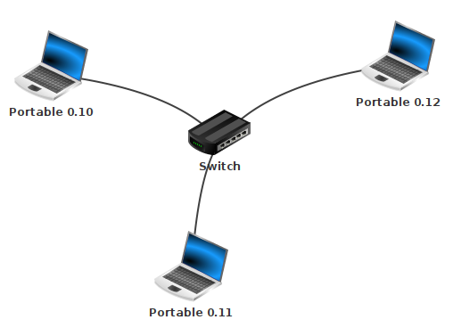
- Installer ensuite le logiciel Gnutella sur les trois ordinateurs.
- Installer les logiciels Explorateur de fichiers et Serveur Web pour le
Portable 0.10 - Démarrer l'explorateur de fichiers et copier le fichier
index.htmldu répertoirewebserverdans le répertoirepeer2peeren utilisant un clic droit. - Ensuite, lancer le logiciel Gnutella sur le
Portable 0.12et rejoindre le réseau duPortable 0.10(adresse IP192.168.0.10). La liste des voisins connectés devrait s'actualiser automatiquement. - Rechercher dans le réseau
peer-to-peerdes fichiers nommésindex.htmlet les télécharger.


Pour terminer la séance ... et la soirée !⚓︎
Exercice 16⚓︎
Réaliser le réseau ci-dessous et le configurer pour pouvoir utiliser les services suivants :
- Tous les masque de sous-réseau sont
255.255.255.0; - site Web sous un nom de domaine précis à choisir vous-même ;
- serveurs mail ;
- DHCP (attribution automatique d'adresses IP) pour l'un des réseaux locaux.
Ne pas hésiter à faire un peu de recherche pour la configuration des serveurs mail et DHCP.
Dans chaque réseau local, l'un des Portables servira pour réceptionner les mails, un autre pour consulter les pages Web.
Chaque réseau local disposera d'un logiciel Gnutella installé sur l'un de ses ordinateurs pour échanger en Pair à Pair.
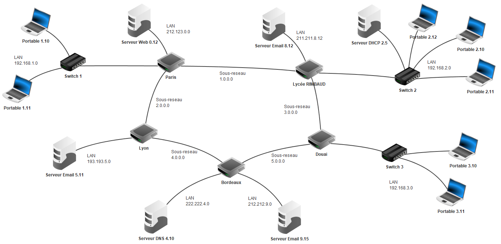
Sources
- David ROCHE. Architectures matérielles et systèmes d'exploitation. https://pixees.fr/informatiquelycee/n_site/nsi_prem.html (Consulté le 30 mars 2020)
- Daniel GARMANN et Gymnasium ODENTHAL. https://www.lernsoftware-FILIUS.de (Consulté le 30 mars 2020)
- Stéphane KELLER. Filius : guide du débutant. https://github.com/KELLERStephane/KELLER-Stephane-Tests2maths/blob/master/6 - Filius/Filius guide du debutant.pdf (Consulté le 30 mars et 5 octobre 2020)